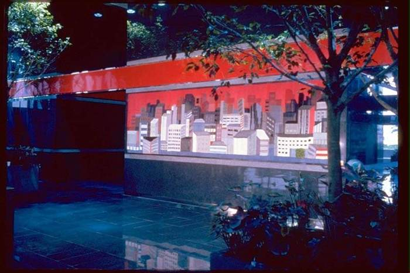

Site-Specific Work
Corporate
Installations
Multilayered tapestries created in collaboration with clients, architects, and designers for architectural spaces.
Selected Corporate Installations
Select Installations
For the past thirty years I have worked extensively with clients, architects, and designers for site specific projects which enhance the surroundings in a very unique way. The multilayered tapestry technique which I have developed works well in a variety of situations because of the following features:
- The depth of the tapestries plays with people's movements. As people move around the works elements come in and out of alignment creating a vibrant surface challenging people's perceptions of what's background? What's foreground? What's real and what's shadow?.
- The designs have a graphic appeal at a distance which is important in creating an atmosphere in a large space, as well as, they have an amazing amount of intricacies of interest and interrelationships upon closer examination.
- As illustrated in the slides, my imagery is very versatile and can range from abstract concepts to representational images depending upon which best represents the interest and needs of the client and the space.
- I am a master at creating an original unique marriage of forms which relate to the clients interest and the architectural surroundings- as illustrated in the work "Recycled" which uses the grocery bags of the food chain and also relates in color and material to the sisal wall, as well as works with the concept of the clients interest in recycling. Another good illustration of this concept and versatility of my problem solving capabilities is the tapestry entitled "Cityscape" for the Trammell Crow Corp. which is one of the largest developers in the world. Here I have not only incorporated the image of a city, but have left openings in the tapestry so that there is a play on the wall that is holding up the tapestry is making up the material and wall designs with in the tapestry.
- These tapestries work well in a variety of lighting situations that can create versatility and interest. For example, they may be lighted from the sides, above, below, or from the back as well as from in front.
- The works are easily maintained. The Plexiglas on the top acts as a barrier to prevent dust accumulation. Also the layers are designed to hang separately which adds to the stability of a work and easy accessibility for any future maintenance.
- The multilayered tapestries bring not only the quality of color and concept into a space as would a painting, and not only the dimensional aspects of a sculpture, but bring with it a unique kinesthetic quality that appeals to peoples tactile sensibilities. This is created through the variety of rich textured and numerous materials which are incorporated into the work. This also adds warmth to large, somewhat cold, sterile environments.
Corporate Installation Video
Selected Clients & Collections
Corporate, public, and institutional installations
Susan Klebanoff has 45 years of experience working with international corporations and government entities to successfully transform lobby spaces in those office settings.
Smithsonian Institution, Renwick Art Gallery-Washington, DC
Museum of Modern Art - Nagoya, Japan
Chubu - Nippon Broadcasting - Nagoya, Japan
U.S. Ambassador's Residency - Formal Dining Room - Moscow, Russia
United States Embassy - Main Lobby - Colombo, Sri Lanka
Ritz Carlton Liner- Amsterdam
Trammell Crow Corporation - Main Lobby - Charlotte, NC
IBM Corporation - Main Lobby - Gaithersburg, MD
TRW Corporation- Mail Lobby - Fairfax, VA
Ritz Carlton Yacht Collection- Amsterdam
Mitsui Corporation - Main Lobby - Mie, Japan
Greater Baltimore Medical Center - Lobby - Baltimore, MD
Hilton Hotel - Main Lobby - Hartford, CT
U.S. Department of State - Conference Room - Washington, DC
Giant Foods, Incorporated - Main Lobby - Landover, MD
USA Today - President's Office - Rosslyn, VA
Design Group Consultants - Main Lobby - Toronto, Canada
Arthur Young & Company - Office - New York, NY
Rose Associates - Main Lobby - New York, NY
Veterans Administration Hospital - Chapel - Bronx, NY
Bear Sterns - Conference Room - Dallas, TX
ARCH Communications - President's Office - Hartford, CT
United States Embassy, Office - Bonn, Germany
First National Bank of Connecticut - Main Lobby - Hartford, CT
Argosy Oil Company - Main Lobby - Oklahoma City, OK
Manhattan West Medical Group - Office - New York, NY
Veterans Administration Hospital - Conference Room - Pittsburgh, PA
Newport News Shipbuilding - Conference Room - Newport News, VA
TRW - Conference Room - Cleveland, OH
Chase Enterprises - President's Office - Hartford, CT
Prudential Insurance Company - Main Lobby - Tyson's Corner, VA
Centennial Development Corporation - Main Lobby - Tyson's Corner, VA
IBM Corporation - Main Lobby - Washington, DC
Cullinet Softwares - Main Lobby - Boston, MA
Kirkpatrick & Lockhart - Conference Room - Washington, DC
Evans Company - Main Lobby - McLean, VA
Artery Organization - Main Lobby - Bethesda, MD
Peat Marwick - Reception - Washington, DC
Kaiser Permanente - Lobby - Kensington, MD
British Petroleum - Conference Room - Washington, DC
Royal Caribbean Cruise Line-"Voyages of the Sea" Oslo, Norway
Royal Caribbean Cruise Line-"Explorers of the Sea" Oslo, Norway
Royal Caribbean Cruise Line- "Adventures of the Sea" Oslo Norway
ATT Corporation- Washington DC
Oracle- Vienna, VA
Capital One Visa- McLean, VA
World Golf Village- Jacksonville, FL
Blue Cross Blue Shield of New Mexico,-Main Lobby-Albuquerque, NM
Norbertine Spiritual Retreat Center- ABQ, NM
Ball Law Offices- Rockville, MD
And many others